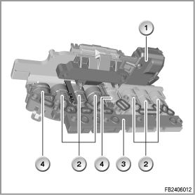

Solenoid Valves
Solenoid valves, electronic pressure control valves
The solenoid valves (MV) and electronic pressure control valves (EDS) are installed in the hydraulic unit (hydraulic selector unit).
The clutches of the automatic transmission are hydraulically controlled in the hydraulic selector unit.

Index Explanation
1 Electronic module
2 Electronic pressure actuators
3 Hydraulic unit (hydraulic selector unit)
4 Solenoid valves
Brief description of components
The following components are described:
Solenoid valves
The 2 solenoid valves are 3/2-way valves, i.e. valves with 3 connections and 2 switch positions.
The solenoid valves are activated by the EGS control module and have 2 functions:
- Valve activated: Open
- Valve not activated: closed
Various clutch valves are activated via the solenoid valves.
Electronic pressure actuators
The electronic pressure control valves convert an electrical current specified by the EGS control module into a proportional hydraulic pressure.
The electronic pressure control valves activate the valves that belong to the shift elements.
The following types of electronic pressure control valve are fitted:
Electronic pressure control valves with rising characteristic curve
Technical data:
- Pressure range: 0 kPa to 888 kPa
- Range of the control current: 100 mA to 1100 mA
- Power supply: 12 Volts
Electronic pressure control valves with falling characteristic curve
Technical data
- Pressure range: 888 kPa to 0 kPa
- Range of the control current: 1100 mA to 100 mA
- Power supply: 12 Volts
No liability can be accepted for printing or other faults. Subject to changes of a technical nature